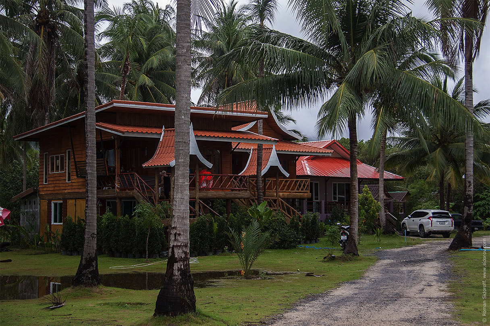
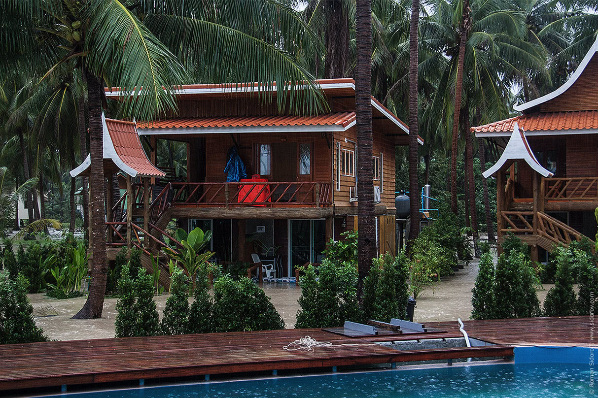

Cегодня проснулся от того, что кто-то пытался открыть мою дверь. Двери благо стеклянные и все видно. С той стороны двери несколько тайцев складывали мешки с песком на пороге моего бунгало в котором я остановился. Секунд через 15, быстро накинув какую-то одежду, я понимаю что картинка со вчерашнего вечера несколько изменилась. Вся территория комплекса покрыта желтоватой водой и вот-вот начнет проникать в мою комнату
Примерно так было вчера вечером:
Примерно так стало сегодня утром:
Не буду лукавить, момент весьма волнительный. Как-то не припомню подобных сценариев по утрам в своей жизни. Нет, не поймите неправильно, было разное, но наводнение на острове в Южной Азии…?
И немного видео:
UPD: Пообщался с американцем, приятный мужик, морячок, серфер. Говорил за 12 лет тут такое впервые. Обычно в декабре сухо и солнечно. Мужик увлекся и продолжил: “На Пангане еще ничего, тут национальный парк, много деревьев и зелени, не так много строят. Деревья, растительность и их корни держат почву и во время подобных наводнений дела получше, чем, скажем на соседнем Ко Самуи. Там они роют землю, строят дома, чтобы зарабатывать бабки с туристов, все больше и больше и больше, вырубают деревья, почва становится рыхлой. Проходят сильные дожди, почву вымывает и все это уходит в море. От таких массивных смывов погибает рыба и разрушаются близлежащие коралловые рифы. Нет рифов — нет рыбы, нечем питаться тем же акулам. А они ребята хищные, если они голодают, они начинают охотиться на всё подряд и могут продегустировать и человека. Вот такая простая связь, но до этого особо никому дела нет.” — я не специалист в этих вопросах, но звучит местами вполне логично.